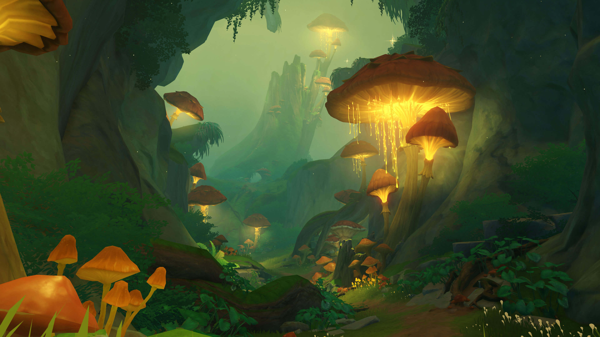
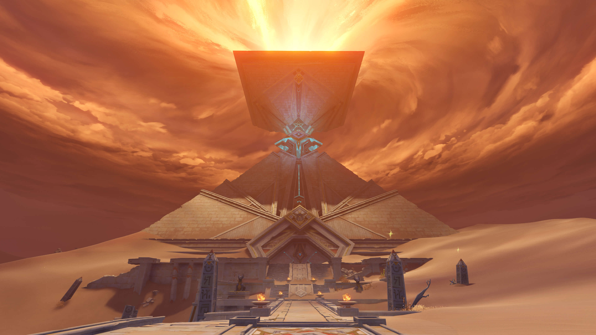

Sumeru
La nación de eruditos situada en el medio oeste de Teyvat. Una tierra exótica en la que coexisten exuberantes bosques tropicales y áridos desiertos, donde crecen y se marchitan innumerables frutos de la sabiduría. Todo viajero que llegue a esta nación podrá adquirir valiosos conocimientos atravesando el bosque y subiendo los escalones que conducen hacia el conocimiento o adentrándose en el desierto y descubriendo sus antiguas ruinas.



Curiosidades
- Sumeru puede que se haya realizado tomando como inspiración Oriente Próximo y culturas del Sur de Asia.
- Sumeru es uno de los muchos nombres del Monte Meru, una montaña de cinco picos sagrada en la Cosmología Hindú, Jainista y Budista.
- El nombre de Sumeru también puede derivarse de Sumeria, una civilización histórica considerada como la primera civilización del mundo, localizada en la parte sur de la Antigua Mesopotamia (Baja Mesopotamia), que, en acadio era Šumeru.
- La especialidad local de Sumeru es el Vino de serpiente gelida.
- 500 años atrás, durante el Cataclismo, el anterior Arconte Dendro fue asesinado, y la actual Diosa de la Sabiduría tomo su lugar. Durante el mandato de la Diosa de la Sabiduría, las Sabias y los Sabios de Sumeru se condujeron a sí mismas(os) a la histeria y abandonaron todo lo mundano para ir por la búsqueda de la sabiduría esotérica.